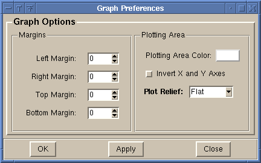
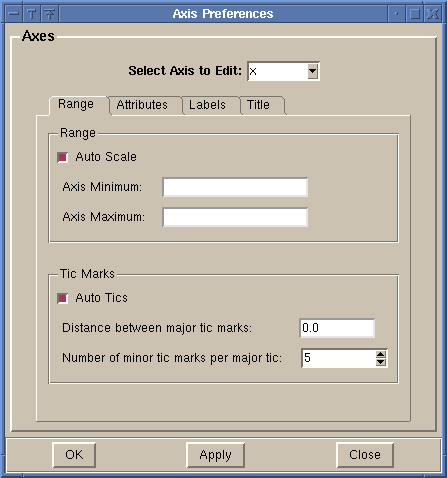
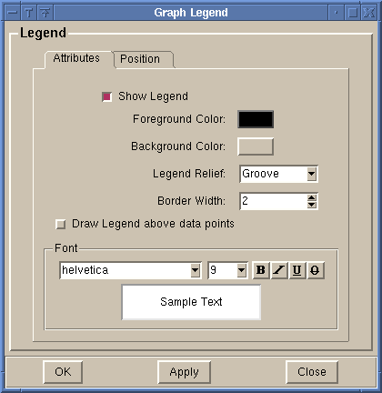
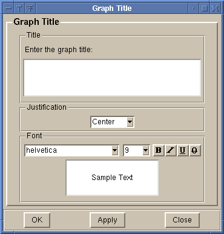
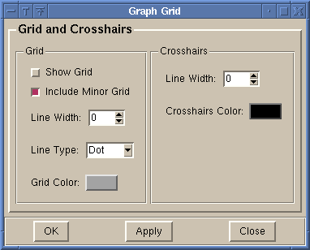

-
Graph Options

-
This allows you to configure the margins of the graph
(the distance between the edge of the graph window and
the graph axis). Units are in pixels. You can also change
the background color of the plotting area, the relief of
the plotting area, and to switch the X and Y axes, so that
the X axis is vertical, and the Y axis is horizontal.
Press 'OK' to make the changes and close the dialog.
Press 'Apply' to make the changes, but keep the dialog open.
Press 'Close' to close the dialog and not make any changes.
-
Axis Options

-
This allows you to configure the parameters that affect the
axes of the graph. Choose the desired axis from the ComboBox
at the top of the dialog. There are 4 tabs which allow you to
modify various parts of the axis:
-
Range - Change the minimum and maximum values of the axis and
the tick marks.
-
Attributes - Change the color, width, and various display options
for the axis.
-
Labels - Change the font that is used for labelling the axis.
-
Title - Change the text and the font used for the axis title.
Press 'OK' to make the changes and close the dialog.
Press 'Apply' to make the changes, but keep the dialog open.
Press 'Close' to close the dialog and not make any changes.
-
Graph Legend

-
This allows you to configure the parameters that affect the
legend of the graph. There are 2 tabs which allow you to
modify various parts of the legend:
-
Attributes - Change the color, width, relief and font for
the legend
-
Position - Change the position of the legend. There are several
standard locations around each side of the graph. You can also
position the legend in the plotting area by choosing the 'Plot Area'
option in the legend position list. You then drag the light blue
box to the desired location for the legend.
Press 'OK' to make the changes and close the dialog.
Press 'Apply' to make the changes, but keep the dialog open.
Press 'Close' to close the dialog and not make any changes.
-
Graph Title

-
Modify the text and font used for the graph title. The graph title is
always displayed above the graph.
-
Grid Options

-
Modify the grid and crosshairs for the graph. This includes the same options that the
Grid Toolbar has.